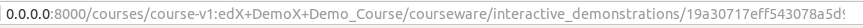

Open edX 101
A Source Code Review
Régis Behmo (@regisb ) fun-mooc.com
Hi everyone! I'm Régis and I work as a software engineer for a large open edx-based platform that provides more than 300 courses to 800k users. I'm extremely happy to be here, really. I love Open edX: the community is fantastic, the conference is a lot of fun. The project has a purpose that I relate with, which is to bring education to 1 billion people. If you are a software engineer and you are working in a bank or an advertising company, I'm telling you: there is a way out.
Ok who is a software engineer in the room? And who is a python developer? (Python developer, as in: you have written 1k lines of python code) How many are django developers? (as in: you have contributed to a Django project at some point) That's great. For the others: it's okay, the world needs you, too. Some parts of this presentation are going to be difficult to follow but you can watch it again later on youtube and the slides will be made available online at this address. (TODO include address)
And the Open edX source code is great, too. The thing is, even after almost two years working on Open edX-code, there are still parts of the source code that remain mysterious and actually quite difficult to understand. And I believe many developers
Hi everyone! My name is Régis and I work as a software engineer for the French ministry of higher education to develop a platform called FUN which provides free, open online courses to everyone. FUN is based on Open edX and it's a pretty big project with more than 800k users and 300 courses. (TODO check these numbers) With such a large project, we often have to dive deep into the source code of Open edX to develop new features, modify existing features or simply to debug issues. The documentation of Open edX is pretty good, in my opinion, especially for a project that big and with so frequent updates. Yet, most of the documentation covers the general architecture of Open edX and it doesn't really go deep inside the APIs of the different Open edX components -- but that's not the point of a project documentation anyway. As a developer, I'm pretty much a bottom-to-top kind of guy. I need to understand how the components work individually in order to understand how a project works as a whole. And this is the point of this presentation -- hopefully: to try to understand how
TODO insert screenshot of fun-mooc.fr with url
, for the next 30 minutes or so, we are going to read the source code of Open edX.
When I was first confronted with the Open edX source code, two years ago, that's when I joined the FUN project at the French ministry of higher education, well exploring the Open edX source code was pretty hard. I was already a senior python and django developer, so I was familiar with the architecture of a standard django project, and some non-standard django projects as well. The Open edX documentation is really good, especially for a project that large. Yet there were many surprises along the way, as I explored the different modules to develop new features or resolve weird bugs.
What I tried to do in this presentation is to explore the important pieces of code that make up the Open edX project. Now I need to give you a word of warning here: I have been an Open edX developer since 2014; that's three full years after the first commit to edx-platform was made.
I have made a couple contributions to Open edX, but nothing major; I'm part of the Open edX community, but I don't work at edX. What I mean is that there is a probability that I say very wrong things about Open edX here, and that probability is much bigger than zero. If you spot a mistake, please tell me about it in the question session or later; the slides will be available on the internet and I will update them to include your comments.
Open edX from above
Alright, let's get started. In order to make this presentation, I did what most developers do when they first start hacking on Open edX: I downloaded a virtual machine containing the latest stable release of Open edX. Everything we say from now on will be about dogwood.3.
Before we dive deep into the Open edX source code, what I would like to do now is to try to give us an overview of how exactly the Open edX source code is organized.
Here is the list of folders that contain major Open edX repositories.
As we can see, it's wrong to assume that Open edX consists of a single code repository. There are mandatory repositories, such as edx-platform and its dependencies from the virtual environment; there is a theming repo that you may wish to create and install yourselves. The forum repository is pretty much mandatory as well, if you wish to provide your users a discussion service. And there are optional ecommerce repositories, which you don't need if your platform does not offer paying products.
Let's take a look at the first repository listed here. edx-platform is actually the biggest code repository that is necessary to run Open edX. But how big is it? Let me do a quick survey here: how many lines of code do you think there are in edx-platform? I'm talking about actual code: not comments, not blank lines and not vendor dependencies (but test code is included).
# LMS + CMS
/edx/app/edxapp/edx-platform
# Forum service (Ruby code)
/edx/app/forum/cs_comments_service
# Programs-based product lines such as edX's XSeries offering.
/edx/app/programs/programs
# Payment services (seldom installed)
/edx/app/ecommerce/ecommerce
/edx/app/ecomworker/ecomworker
# Theme customization (optional)
/edx/app/edxapp/themes
# Python virtual environment for edx-platform dependencies
/edx/app/edxapp/venvs/edxapp
...
As an indication, here is the line count for several well known projects, written in Python and in other languages, such as Java or php. Does that change your estimates?
Open edX from above
edx-platform
How many lines of code in edx-platform? (1 Dj = 1 Django)
CPython 3.5.1 (Python, C, C++) 967 725 # 4.23 Dj
Moodle (php) 672 331 # 2.94 Dj
ElasticSearch (Java) 590 318 # 2.58 Dj
Wordpress (php) 291 709 # 1.28 Dj
Django 228 381 # 1 Dj
Sentry 175 073 # 0.77 Dj
Mercurial 122 671 # 0.54 Dj
Celery 44 022 # 0.19 Dj
Flask 9 072 # 0.04 Dj
edx-platform contains 427k lines of code. Outside of python itself, as far as I know, this is the largest python project that fits in a single repository. edx-platform is twice as big as Django. And that's just for edx-platform; as I mentioned, edx-platform is one of many Open edX repositories. I can't emphasize this enough: Open edX is really big.
Why is that important? Well it's important for me. When I submitted this talk and started working on the presentation, my ambition was to go through most parts of the source code and highlight the best pieces I found. But with that much code, this approach just wasn't feasible. In fact, a lot of the code that you are going to find in Open edX is more-or-less standard Django code. What I would like to talk about in this presentation is the code that is non-standard, tricky or difficult to grasp. To do that, we need to understand what edx-platform is made of. Let's take a look how the edx-platform code is organised, physically speaking.
Open edX from above
edx-platform
How many lines of code in edx-platform? (1 Dj = 1 Django)
CPython 3.5.1 (Python, C, C++) 967 725 # 4.23 Dj
Moodle (php) 672 331 # 2.94 Dj
ElasticSearch (Java) 590 318 # 2.58 Dj
edx-platform 427 321 # 1.87 Dj
Wordpress (php) 291 709 # 1.28 Dj
Django 228 381 # 1 Dj
Sentry 175 073 # 0.77 Dj
Mercurial 122 671 # 0.54 Dj
Celery 44 022 # 0.19 Dj
Flask 9 072 # 0.04 Dj
Inside edx-platform
edx-platform is mostly made of Python, javascript, html and css code. That's not surprising at all for a large web project. Those of you that have worked with Open edX before know that running a server requires a rather long preliminary phase for compiling javascript and css code. This compile time is caused by the 13% of SASS and the Coffeescript code. Now let's take a closer look at how this code is organized.
cloc --exclude-dir=<vendor-folders> edx-platform-------------------------------------------------------------------------------
Language files blank comment code
-------------------------------------------------------------------------------
Python 1791 64982 98146 244140 # 57.1%
Javascript 718 13745 10806 79920 # 18.7%
SASS 300 10054 3769 43727 # 10.2%
HTML 493 4716 30435 27928 # 6.5%
CoffeeScript 118 2660 1459 14558 # 3.4%
CSS 12 510 461 6675 # 1.5%
SQL 2 8 9 4137
XML 286 172 33 3451
YAML 40 270 367 1827
Bourne Shell 13 219 222 700
make 2 31 6 143
ActionScript 1 21 23 74
XSD 1 8 0 41
-------------------------------------------------------------------------------
SUM: 3777 97396 145736 427321
-------------------------------------------------------------------------------
In this sunburst ring graph, we have plotted the different components of edx-platform. The number of lines of code of each component is proportional to its angular range. The further we go from the center, the deeper we go in the folder structure of the repository. We can see that the edx-platform code is rather well separated in modular components. The lms and the cms are clearly visible; if you've never run Open edX before: edx-platform is not one single django project, but more like two distinct django projects with some common code, stored in the common and openedx folders, here and there.
We can spot a lot of javascript code, but also a lot of test code, including in the javascript folders, which is comforting.
The LMS is the django project provided to the students; the CMS is used by the course staff to design and administer their courses. As we can see, the LMS-specific code is much more complex than the CMS-specific code. Note however that the code common to both the LMS and the CMS is very large as well; almost as large as the LMS-specific code. The LMS is made of many different django applications, the largest of which is the courseware, which is in charge of displaying a course to a user. On the other hand, the CMS is almost entirely made of one single big django application, called the contentstore. The common code contains a variety of application, but there is one library that stands out very clearly. The xmodule package is simply huge. At more than 65k lines of code, it can be considered as a very big python project in its own right.
(go down for lms/cms/common break down)
Inside edx-platform
Here we compare edx-platform with other Open edX repositories that are included in the devstack. The largest of them is the cs_comments_service project, written in ruby. It provides an HTTP API that edx-platform connects to in order to display the forums in the LMS. The ecommerce repository is for selling products on Open edX: it's large but it hasn't been created specifically for Open edX. Then there is the virtual environment that contains all the edx-platform dependencies
# LMS + CMS
/edx/app/edxapp/edx-platform # 427321
# Forum service (Ruby code)
/edx/app/forum/cs_comments_service # 5399
# Programs-based product lines such as edX's XSeries offering.
/edx/app/programs/programs # 4906
# Payment services (seldom installed)
/edx/app/ecommerce/ecommerce # 25670
/edx/app/ecomworker/ecomworker # 643
# Theme customization (optional)
/edx/app/edxapp/themes
# Python virtual environment
/edx/app/edxapp/venvs/edxapp
Inside edx-platform
dependencies
The virtual environment contains quite a few packages. Here I listed a few of the Open edx-specific repositories. There are many xblocks, such as the recommender-xblock, edx-sga and edx-jsme (the molecular editor). Most of these xblocks clock at about 2k to 3k lines of code, which tells us that it's not so complex to create an xblock. What is impressive here is the size of the ora2 repository, for peer-assessed exams. We'll come back to that later.
/edx/app/edxapp/venvs/edxapp
ora2 # 31245
edx-search # 3321
opaque-keys # 3089
recommender-xblock # 3001
xblock-poll # 2194
edx-submissions # 2193
edx-milestones # 1953
event-tracking # 1777
edx-sga # 1567
edx-reverification-block # 1418
xblock-google-drive # 1261
edx-user-state-client # 1083
ccx-keys # 748
rate-xblock # 598
acid-xblock # 750
edx-jsme # 607
done-xblock # 534
Open edX from the inside
Viewing a course
We have spent a lot of time counting lines of code in Open edX and that has been a bit tedious, sorry about that. Yet I feel it has been necessary in order to understand where the complexity lies in the project. We have seen the places where most code is written, and as we explore Open edX code, we can expect to pay a visit to these places. Now what I would like to do is take a specific view, in the django sense, and see where it goes. This should tell us something about how the sausage is made.
Open edX from the inside
Viewing a course
Let's run an LMS! With the following commands, we download a virtual machine and provision it with a recent install of Open edX. We keep using the latest stable release of Open edX, which is dogwood.3.
$ curl -L https://raw.github.com/edx/configuration/.../Vagrantfile > Vagrantfile
$ OPENEDX_RELEASE="named-release/dogwood.3" vagrant up && vagrant ssh
$ sudo su edxapp
$ paver devstack lms
...
Starting development server at http://0.0.0.0:8000/
Now we just access the content of a course from a web browser. See the URL that has just been accessed?
We are going to do what django developers do all day -- actually, what backend web developers do all day: find the code that generates the page with this URL.
Open edX from the inside
Viewing a course
Let's follow the trail! we can find the regular expression that corresponds to the url of the courseware page in the url file of the LMS. This file leads us to the index function of the courseware views module.

lms/urls.py:
url(
r'^courses/{}/courseware/(?P<chapter>[^/]*)/(?P<section>[^/]*)/$'.format(
settings.COURSE_ID_PATTERN,
),
'courseware.views.index',
name='courseware_section',
)
Open edX from the inside
Viewing a course
We go down the rabbit hole and take a look at the content of the index view from the courseware views module. What can we find in there? First of all, the course is loaded by its course_key. Here, course is an object that -- apparently -- contains all the information related to the course. We can even use the course object to fetch the object that corresponds to the section inside the course. But what is the type of the course object?
lms/djangoapps/courseware/views.py:
def index(request, course_id, chapter, section):
...
course = get_course_with_access(..., course_key, ...)
section_module = get_module_for_descriptor(
user,
request,
section_descriptor,
field_data_cache,
course_key,
position,
course=course
)
Here we print the class and the base classes of the course object. There are many of them, as we can see. The class of the course instance is CourseDescriptorWithMixins from the internal module of the xblock package. And that's our first encounter with xblocks. That was fast...
I want to step back for a minute and summarize how we got there.
pprint(course.__class__.__mro__) # class and all base classes of 'course'
(<class 'xblock.internal.CourseDescriptorWithMixins '>,
<class 'xmodule.course_module.CourseDescriptor'>,
<class 'xmodule.course_module.CourseFields'>,
<class 'xmodule.seq_module.SequenceDescriptor'>,
<class 'xmodule.seq_module.SequenceFields'>,
<class 'xmodule.seq_module.ProctoringFields'>,
<class 'xmodule.mako_module.MakoModuleDescriptor'>,
<class 'xmodule.mako_module.MakoTemplateBlockBase'>,
<class 'xmodule.xml_module.XmlDescriptor'>,
<class 'xmodule.xml_module.XmlParserMixin'>,
<class 'xmodule.x_module.XModuleDescriptor'>,
<class 'xmodule.x_module.HTMLSnippet'>,
<class 'xmodule.x_module.ResourceTemplates'>,
<class 'lms.djangoapps.lms_xblock.mixin.LmsBlockMixin'>,
<class 'xmodule.modulestore.inheritance.InheritanceMixin'>,
<class 'xmodule.x_module.XModuleMixin'>,
<class 'xmodule.x_module.XModuleFields'>,
<class 'xblock.core.XBlock'>,
<class 'xblock.mixins.XmlSerializationMixin'>,
<class 'xblock.mixins.HierarchyMixin'>,
<class 'xmodule.mixin.LicenseMixin'>,
<class 'xmodule.modulestore.edit_info.EditInfoMixin'>,
<class 'xblock.XBlockMixin'>,
<class 'xblock.core.XBlockMixin'>,
<class 'xblock.mixins.ScopedStorageMixin'>,
<class 'xblock.mixins.RuntimeServicesMixin'>,
<class 'xblock.mixins.HandlersMixin'>,
<class 'xblock.mixins.IndexInfoMixin'>,
<class 'xblock.mixins.ViewsMixin'>,
<class 'xblock.core.SharedBlockBase'>,
<class 'xblock.plugin.Plugin'>,
<type 'object'>)
Open edX from the inside
Viewing a course
We have booted a local LMS server, opened a url from the courseware, followed that url to find the corresponding django view, located in the views module of the courseware app. That view contains an interesting piece of code that loads the course, and then loads the course section that we are accessing. What we observe is that a course is represented by an instance of CourseDescriptorWithMixins. There is something surprising about that, even for experienced django developers. Actually, the CourseDescriptorWithMixins is not declared in the internal module of the xblock package. You can go take a look there, you won't find anything. In fact, the CourseDescriptorWithMixins class is not declared anywhere. Let's go back to the list of base classes of the course object to understand what is happening here.
http://.../courses/...edX+DemoX+Demo_Course/courseware/interactive_demonstrations/19a30.../
courseware.views.index
course = get_course_with_access(...)
xblock.internal.CourseDescriptorWithMixins
?
Btw, what is a mixin?
Before we go any further, I'm not sure everyone knows what a mixin is. Quick survey: who knows exactly what a mixin is? It's a notion that is very popular in Python, but not so much in some other languages. Come on, don't be shy. Ok I'll give you the definition by wikipedia.
This definition is a bit abstract, so let's see an example. Shape is a class that can serve as the base class of many different classes ; for instance, the Square class, and the Triangle class. All these shapes share a common method, the perimeter method which computes the sum of the lengths of the shape edges. Now let's say we need a colored shape : a shape with color. Applying colors is a neat feature, but not every class needs it. For instance, we only need colored squares, but not colored triangles. We definitely don't want to bloat the definition of triangles with a useless colorize method. So we create a ColorMixin that defines the colorize feature; note that the ColorMixin does not work by itself, because it has no edges attribute. Then the ColoredSquare class inherits from both the Square class and the ColorMixin class and exhibits properties from both worlds.
...
Ok, did that make it clear what a mixin is? In brief, a mixin is a class that provides a piece of functionality. It's like an interface, but with some partially-defined methods.
Some say that the world of developers is divided in two categories: those who hate Mixins and those who abuse them.
Ok let's return to the course descriptor.
Wikipedia: "In object-oriented programming languages, a mixin is a class that contains methods for use by other classes"
class Shape(object):
def __init__(self):
self.edges = []
def perimeter(self):
return sum([e.size for e in self.edges])
class Square(Shape):
def __init__(self):
self.edges = make_square()
class Triangle(Shape):
def __init__(self):
self.edges = make_triangle()
class ColorMixin(object):
def colorize(self, color):
for edge in self.edges:
edge.color = color
class ColoredSquare(Square, ColorMixin):
pass
The course object is an instance of CourseDescriptorWithMixins but we notice that one of its base classes is CourseDescriptor from the module called course_module inside the xmodule package. What happens behind the scenes, is the the CourseDescriptorWithMixins class is generated dynamically as a combination of multiple classes, including the CourseDescriptor class. But how exactly is the CourseDescriptorWithMixins class generated?
pprint(course.__class__.__mro__) # class and all base classes of 'course'
(<class 'xblock.internal.CourseDescriptorWithMixins '>,
<class 'xmodule.course_module.CourseDescriptor '>,
<class 'xmodule.course_module.CourseFields'>,
<class 'xmodule.seq_module.SequenceDescriptor'>,
<class 'xmodule.seq_module.SequenceFields'>,
<class 'xmodule.seq_module.ProctoringFields'>,
<class 'xmodule.mako_module.MakoModuleDescriptor'>,
<class 'xmodule.mako_module.MakoTemplateBlockBase'>,
<class 'xmodule.xml_module.XmlDescriptor'>,
<class 'xmodule.xml_module.XmlParserMixin'>,
<class 'xmodule.x_module.XModuleDescriptor'>,
<class 'xmodule.x_module.HTMLSnippet'>,
<class 'xmodule.x_module.ResourceTemplates'>,
<class 'lms.djangoapps.lms_xblock.mixin.LmsBlockMixin'>,
<class 'xmodule.modulestore.inheritance.InheritanceMixin'>,
<class 'xmodule.x_module.XModuleMixin'>,
<class 'xmodule.x_module.XModuleFields'>,
<class 'xblock.core.XBlock'>,
<class 'xblock.mixins.XmlSerializationMixin'>,
<class 'xblock.mixins.HierarchyMixin'>,
<class 'xmodule.mixin.LicenseMixin'>,
<class 'xmodule.modulestore.edit_info.EditInfoMixin'>,
<class 'xblock.XBlockMixin'>,
<class 'xblock.core.XBlockMixin'>,
<class 'xblock.mixins.ScopedStorageMixin'>,
<class 'xblock.mixins.RuntimeServicesMixin'>,
<class 'xblock.mixins.HandlersMixin'>,
<class 'xblock.mixins.IndexInfoMixin'>,
<class 'xblock.mixins.ViewsMixin'>,
<class 'xblock.core.SharedBlockBase'>,
<class 'xblock.plugin.Plugin'>,
<type 'object'>)
Open edX from the inside
Viewing a course
A CourseDescriptorWithMixins class is created by an instance of the Mixologist class. Let's take a look at this class. When a mixologist is instantiated, it is passed a list of classes. And when the mix method is called on a class, a new type is created that inherits from the mixin classes of the mixologist. But what kind of mixins do we usually pass to the constructor of the Mixologist class? In both the CMS and the common code, you'll find the following piece of code. HAHA! Now we can see that the default LMS and CMS base classes of a course are defined in a django setting.
xblock/runtime.py:
class Mixologist(object):
def __init__(self, mixins):
self._mixins = tuple(mixins)
def mix(self, cls):
...
return type(
base_class.__name__ + 'WithMixins', # class name
(base_class, ) + self._mixins, # class bases
{'unmixed_class': base_class} # class attributes
)
cms/djangoapps/contentstore/views/component.py
common/lib/xmodule/xmodule/modulestore/__init__.py
mixologist = Mixologist(settings.XBLOCK_MIXINS)
Open edX from the inside
Viewing a course
The XBLOCK_MIXINS setting is defined both in the LMS and the CMS and it has almost the same value in both.
lms/envs/common.py
cms/envs/common.py
XBLOCK_MIXINS = (
LmsBlockMixin,
InheritanceMixin,
XModuleMixin,
EditInfoMixin,
AuthoringMixin, # (In the CMS only)
)
Open edX from the inside
Viewing a course
We see that the following mixins are added to every coursedescriptor object. These mixins provide some functionalities to the coursedescriptor. In the code, the XBLOCK_MIXINS setting is preceded by a comment that explains why these mixins need to be added. Let's read this comment. The comment tells us that so-called modulestore objects are in charge of creating xblocks, but actually the responsibility of creating xblocks should be assigned to Runtime/Application objects. This raises a couple questions.
lms/envs/common.py
cms/envs/common.py
# These are the Mixins that should be added to every XBlock.
# This should be moved into an XBlock Runtime/Application object
# once the responsibility of XBlock creation is moved out of modulestoreXBLOCK_MIXINS = (
LmsBlockMixin,
InheritanceMixin,
XModuleMixin,
EditInfoMixin,
AuthoringMixin, # (In the CMS only)
)
Open edX from the inside
Viewing a course
First of all, what is an xblock? Then, what is a runtime? And finally, what is a modulestore?
Ok let's talk about xblocks. Now I know this is the Open edX conference; certainly, many of you are very familiar with the concept of xblocks. Who knows what an xblock is?
That's a lot of people / Fewer than I expected.
Those of you who know what an xblock is, let me ask you: who knows how an XBlock is instantiated in Open edX? In other words, how do you create an XBlock instance?
Much less people, that's what I was hoping for, to be honest / Wow that's a lot of people. Well I'll show the next slides anyway, for posterity.
/ Wow, that's a lot. Yes, the runtime instantiates xblocks. Ok, bonus question: are you sure? As we'll see, it's a bit more complicated.
# These are the Mixins that should be added to every XBlock.
# This should be moved into an XBlock Runtime/Application object
# once the responsibility of XBlock creation is moved out of modulestore
What is an "XBlock"?
What is an "XBlock Runtime/Application"?
What is a "modulestore"?
XBlocks from the inside
There are many tutorials and videos that explain what xblocks are, from a 10k meter view. Here are two videos that I think really stand out with their clarity. Both include explanations by Ned Batchelder. Usually, xblocks are described as the building blocks of a course: a course is an xblock that contains other xblocks. It's "xblocks all the way down" as Ned says. Videos are instances of xblocks, and so are polls, peer assessed exams, and many others: all the components of a course are xblock instances. There are hundreds of different kinds of xblocks that you can mish mash together to build interesting, fun, interactive courses.
There is the xblock directory located at xblocks.org. Don't go to xblocks.com, that's a website for quilting. It would make things even more confusing.
Examples: course , poll , peer assessed exams , ...
The xblock directory: http://xblocks.com http://xblocks.org/
XBlocks from the inside
Anyway! As Ned says, it's xblocks all the way down.
"XBlocks all the way down" -- Ned Batchelder
Try to imagine Open edX as a planet floating through space on the back of a giant turtle. Anyway! Sorry about that. Now let's return to our CourseDescriptorWithMixin instance, shall we?
XBlocks from the inside
"XBlocks all the way down" -- Ned Batchelder
As we expected, the course object is not only an instance of CourseDescriptorWithMixins but also an XBlock instance. But who has the responsibility of instantiating this xblock? To answer this question, we need to give some technical details about xblocks.
pprint(course.__class__.__mro__) # class and all base classes of 'course'
(<class 'xblock.internal.CourseDescriptorWithMixins '>,
<class 'xmodule.course_module.CourseDescriptor'>,
<class 'xmodule.course_module.CourseFields'>,
<class 'xmodule.seq_module.SequenceDescriptor'>,
<class 'xmodule.seq_module.SequenceFields'>,
<class 'xmodule.seq_module.ProctoringFields'>,
<class 'xmodule.mako_module.MakoModuleDescriptor'>,
<class 'xmodule.mako_module.MakoTemplateBlockBase'>,
<class 'xmodule.xml_module.XmlDescriptor'>,
<class 'xmodule.xml_module.XmlParserMixin'>,
<class 'xmodule.x_module.XModuleDescriptor'>,
<class 'xmodule.x_module.HTMLSnippet'>,
<class 'xmodule.x_module.ResourceTemplates'>,
<class 'lms.djangoapps.lms_xblock.mixin.LmsBlockMixin'>,
<class 'xmodule.modulestore.inheritance.InheritanceMixin'>,
<class 'xmodule.x_module.XModuleMixin'>,
<class 'xmodule.x_module.XModuleFields'>,
<class 'xblock.core.XBlock '>,
<class 'xblock.mixins.XmlSerializationMixin'>,
<class 'xblock.mixins.HierarchyMixin'>,
<class 'xmodule.mixin.LicenseMixin'>,
<class 'xmodule.modulestore.edit_info.EditInfoMixin'>,
<class 'xblock.XBlockMixin'>,
<class 'xblock.core.XBlockMixin'>,
<class 'xblock.mixins.ScopedStorageMixin'>,
<class 'xblock.mixins.RuntimeServicesMixin'>,
<class 'xblock.mixins.HandlersMixin'>,
<class 'xblock.mixins.IndexInfoMixin'>,
<class 'xblock.mixins.ViewsMixin'>,
<class 'xblock.core.SharedBlockBase'>,
<class 'xblock.plugin.Plugin'>,
<type 'object'>)
XBlocks from the inside
Let's analyse an XBlock! For this presentation I selected xblock-poll, which was developed at opencraft. It's clean and concise, with just about 1k lines of python code. Note that for the sake of conciseness, some portions of code have been rewritten. The PollBlock class declares a student_view. There is also a studio_view, which is not indicated here because it does pretty much the same thing as the student_view. The student view method returns a fragment, which is simply a piece of html code that may include references to css or js resources.
What is more interesting is the declaration of fields associated to the xblock. In order to actually do something, the xblock needs to have some data attached. This data is declared as fields. These fields remind us of fields associated to a django model class. But actually, django model fields and xblock fields are completely different things. In django, field values are associated to a model instance by the metaclass of the model. In xblocks, the fields are associated to an xblock instance. All this is very abstract, and honestly it's not too important; just remember one thing: xblock fields look similar to django model fields, but actually they are completely different things.
Note that a scope is associated to each field. We'll come back to that later.
This xblock also has associated methods. In one of them, we access the 'settings' service from the xblock runtime. The 'settings' service was demanded by the xblock as a decorator of the PollBlock class. We still haven't explained what a runtime is, but we can already say that it is supposed to provide services to xblocks. In fact, runtimes have multiple responsibilities.
XBlock-poll: "A user-friendly way to query students."https://github.com/open-craft/xblock-poll
poll/poll.py:
@XBlock.wants('settings')class PollBlock(XBlock):
answers = List(scope=Scope.settings, help="The answer options on this poll.")
choice = String(scope=Scope.user_state, help="The student's answer")
...
def studio_view(self):
...
return xblock.fragment.Fragment(some_html_code)
def img_alt_mandatory(self):
"""
Determine whether alt attributes for images are configured to be mandatory.
"""
settings_service = self.runtime.service(self, "settings")
if not settings_service:
return True
xblock_settings = settings_service.get_settings_bucket(self)
return xblock_settings.get('IMG_ALT_MANDATORY', True)
XBlock runtimes
Let's cut to the chase: a runtime is also in charge of instantiating xblocks. As we can see, a runtime needs to be passed to the xblock constructor. In practice, the runtime passes itself to the new xblock instances.
Now, like we said, runtimes also provide services to Xblocks. Services can be just about anything.
The call to 'service' returns an object on which the xblock is free to call just any function.
TODO how to create a new service and add it to the LMS? and why should we do it?
Actually, xblock developers are encouraged to make use of runtime services instead of importing modules from the edx-platform repository. Remember: xblocks are supposed to be portable and not implementation-specific. They declare to the runtime the services that they require, via the 'needs' and 'wants' decorators.
In particular, there exists a service in charge of reading and writing xblock field data. Let's take a look at that service.
Runtime responsibilities:
1. Instantiate xblocks
class XBlock(...):
def __init__(self, runtime, ...):
...class Runtime(object):
def construct_xblock_from_class(self, cls, scope_ids,
field_data=None, *args, **kwargs):
return self.mixologist.mix(cls)(runtime=self, scope_ids=scope_ids,
field_data=field_data, *args, **kwargs)2. Provide service to xblocks
settings_service = self.runtime.service(self, "settings")
XBlock runtimes
XBlock serialization/deserialization ('field-data' service)
The XBlock class inherits from the ScopedStorageMixin, which itself needs the field-data service. The 'field-data' service is expected to expose a `set_many` method that can be used to save xblock instances. This is for writing xblock data. What about reading xblock data? This is performed inside the Field class. Each field attribute reads into the field_data of the xblock -- in other words, the field-data service from the runtime. Then, the methods has and get are executed. Actually, the field data service is pretty straightforward. The field-data service is only supposed to implement the FieldData interface. Here it is:
xblock/core.py:
class XBlock(..., ScopedStorageMixin, ...):
...xblock/mixins.py:
@RuntimeServicesMixin.needs('field-data')
class ScopedStorageMixin(...):
@property
def _field_data(self):
return self.runtime.service(self, 'field-data')
def force_save_fields(self, field_names):
...
self._field_data.set_many(self, fields_to_save_json)xblock/fields.py:
class Field(...):
def __get__(self, xblock, ...):
field_data = xblock._field_data
if field_data.has(xblock, self.name):
return value = self.from_json(field_data.get(xblock, self.name))
else: ...
XBlock runtimes
XBlock serialization/deserialization ('field-data' service)
which contains a handful of methods to implement. These methods are get, set and delete. The set_many and has methods are actually wrappers around set and get, respectively. Ok, now we now a bit more about xblock storage. Just to summarize our progress until now:
xblock/field_data.py:
class FieldData(object):
@abstractmethod
def get(self, block, name):
raise NotImplementedError
@abstractmethod
def set(self, block, name, value):
raise NotImplementedError
@abstractmethod
def delete(self, block, name):
raise NotImplementedError
@abstractmethod
def has(self, block, name):
try:
self.get(block, name)
return True
except KeyError:
return False
def set_many(self, block, update_dict):
for key, value in update_dict.items():
self.set(block, key, value)
Course components, and actually course themselves are... thingies with mixins. They are also... xblocks. Which are instantiated by a... runtime with a field-data service... that stores data in... where? Well it depends of course. You are perfectly free to store your data in SQL, MongoDB orthe Saturn rings (TODO insert images) as long as they implement the FieldData interface. But where does Open edX store course data? To answer that question, we need to take a look at the field data services that are used in Open edX.
Course components
are
StuffWithMixins
are
XBlocks
instantiated by
a runtime
with a
'field-data' service
that stores data in
where?
XBlock storage
The field data service that is used in the LMS is called LmsFieldData and here we have the definition of the constructor of the LmsFieldData class. We have a similar class in the CMS, called CmsFieldData, with an almost identical definition. As we can see, the LMS field data has two different policies for storing xblock fields, depending on the xblock scope. But what is the scope of an xblock? I mentioned that there are different possible scopes for the fields of an XBlock.for the fields of an XBlock. Remember the scope associated to each field from the polling xblock? The scope of an xblock field defines the set of xblock instances over which the field takes the same value. For instance, the 'choice' field of the polling xblock is specific to each user and each xblock instance. On the other hand the 'answers' field is the list of possible answers for this xblock.
The LmsFieldData has two different storage strategies for the authored_data and the student_data. Authored data is data produced by course authors, while student data is data produced by students. You may have heard that student data is stored in MySQL while course data is stored in MongoDb, and this comes from this definition of the LmsFieldData and the CmsFieldData services. But where exactly are student_data and authored_data defined? We have to dig deep in order to discover the definition of authored_data and student_data.
"The scope of an xblock field defines the set of xblock instances over which the field takes the same value."
lms/djangoapps/lms_xblock/field_data.py:
class LmsFieldData(SplitFieldData):
def __init__(self, authored_data, student_data):
# See also CmsFieldData in cms/lib/xblock/field_data.py
...
super(LmsFieldData, self).__init__({
# one block, all users
Scope.content: authored_data, # all courses
Scope.settings: authored_data, # one course
Scope.user_state_summary: student_data, # aggregated user data
# one user
Scope.user_state: student_data, # one block, one course
Scope.user_info: student_data, # all blocks
Scope.preferences: student_data, # all blocks from same type
# XBlock-specific properties
Scope.parent: authored_data,
Scope.children: authored_data,
})
class PollBlock(XBlock):
answers = List(scope=Scope.settings, help="The answer options on this poll.")
choice = String(scope=Scope.user_state, help="The student's answer")
...
XBlock storage
Student data
I will spare you the details and answer this question straight away. In the LMS, the student data is actually initialised in the get_module_for_descriptor function. It is a django key-value store and the data are stored in a MySQL table. So if you are the administrator of an Open edX platform, you don't really have a choice for storing student data: it has to be in MySQL. But it's not the same for authored data.
lms/djangoapps/courseware/module_render.py:
def get_module_for_descriptor(user, request, descriptor, ..., course_key, ...):
return get_module_system_for_user(
...
student_data=KvsFieldData(DjangoKeyValueStore(...))
...
)
XBlock storage
Authored data
Authored data is instantiated from a setting defined both in the LMS and the CMS. And you can choose to store authored data in MongoDb, as it is by default, MySQL, XML, the saturn rings, etc. I guess pretty much everything is clear now: XBlocks are instantiated by runtimes. There are two different strategies to store XBlock data: the student data is stored in a MySQL key-value store while authored data can be stored pretty much anywhere; by default it is in MongoDb. Everything is clear. Riiiiiight. Now let me ask you a question. Why is this setting called "modulestore"?
lms/envs/common.py:
MODULESTORE = {
'default': {
'ENGINE': 'xmodule.modulestore.mixed.MixedModuleStore',
'OPTIONS': {
'stores': [
{
'NAME': 'split',
'ENGINE': 'xmodule.modulestore.split_mongo.split_draft.DraftVersioningModuleStore',
...
},
{
'NAME': 'draft',
'ENGINE': 'xmodule.modulestore.mongo.DraftMongoModuleStore',
...
},
{
'NAME': 'xml',
'ENGINE': 'xmodule.modulestore.xml.XMLModuleStore',
...
}
]
}
}
}
If you remember correctly, we started investigating xblocks, runtimes and field data service because of a comment from the settings module. That comment had sparked a number of questions. I believe we have answered the first two. But what's the connection with the modulestore? This is actually a pretty important question -- and a difficult one, too. To be honest, I didn't know the answer to that question before I started working on this presentation. I'll try to be clear and concise.
# These are the Mixins that should be added to every XBlock.
# This should be moved into an XBlock Runtime/Application object
# once the responsibility of XBlock creation is moved out of modulestore
What is an "XBlock"?
What is an "XBlock Runtime/Application"?
What is a "modulestore"?
XModules vs XBlocks
Introduction of XBlocks:
commit 789ac3fc875aa26380fc7f0865dc5c89a7359473
Author: Calen Pennington <calen.pennington@gmail.com>
Date: Fri Jan 4 16:19:58 2013 -0500
Use the XBlock library as the base for XModule, so that we can
incrementally rely on more and more of the XBlock api
XModules vs XBlocks
Introduction of XBlocks:
# bisect from latest release to first commit
$ git bisect start named-release/dogwood.3 cc1de22e2
$ git bisect run ./bisect.sh
$ cat ./bisect.sh
#! /bin/bash
if [ "$(git grep -i xblock | wc -l)" -le "10" ]; then
exit 0
else
exit 1
fi
XModules (deprecated)
XModuleDescriptor instantiation:
ModuleSystem
Bind XModuleDescriptor to user:
ModuleSystem
XBlock SDK
XBlock instantiation:
Runtime
Open edX XBlocks (backward-compatible)
XBlock instantiation:
Runtime
Bind XBlock to user:
Runtime
As we can see, student data is stored in a key-value store managed by django. DjangoKeyValueStore is not very interesting to look at; all the intelligence is in field_data_cache. What about authored_data? authored_data is descriptor._field_data. And the storage of this data is installation-dependent. Itis configured by a setting called MODULESTORE. If you use the default Open edX settings, then you are using a MixedModuleStore that can point to multiple modulestores: a Draft Modulestore, a SplitMongo Versioned Draft Modulestore or an XML Modulestorestore. You can even use multiple modulestores at the same time.
To summarize: in Open edX, while xblocks are not bound to a user, they are actually XModuleDescriptor. They do not contain any user-specific data, just authored data, which is stored inside a modulestore configured by the MODULESTORE variable. But once an xblock becomes attached to a user, the field_data that is used is a django, SQL-based Key-value store. Pfiouh, that was hard.
The LMS/CMS runtimes
The LMS and the CMS each define a different runtime, which is not so surprising, because xblocks need to use different services and rendering functions in the lms and in the cms. The LMS runtime is defined in the lms_xblock application. It's called the LmsModuleSystem, and it inherits from the ModuleSystem class. The runtime of the CMS is located in the contentstore of the cms, and it's called the PreviewModuleSystem. It also inherits from the ModuleSystem. But what is the ModuleSystem? The ModuleSystem is defined in the xmodule application and inherits from the xblock Runtime class.
Actually, in Open edX, the modulestore is in charge of loading the xblocks. Because of historical reasons, open edx needs to manipulate XModules, not xblocks. What are XModules? Xmodules are created from XModuledescriptors, which are not bound to a student. To make things even more complicated, XModuleDescriptor inherit from XBlock, although they are not bound to a student. The binding is done by the bind_for_student method of the XModule class. Again, this is very complex stuff, and not 100% necessary to understand. Let's just remember that Open edX creates a glue to make old XModules compatible with modern XBlocks. But still, we'd like to know where our stuff is stored!
xmodule/xmodule/x_module.py
@XBlock.needs("i18n")
class XModuleDescriptor(HTMLSnippet, ResourceTemplates, XModuleMixin):
"""
An XModuleDescriptor is a specification for an element of a course. This
could be a problem, an organizational element (a group of content), or a
segment of video, for example.
XModuleDescriptors are independent and agnostic to the current student state
on a problem. They handle the editing interface used by instructors to
create a problem, and can generate XModules (which do know about student
state).
"""
...
class XModuleMixin(XModuleFields, XBlock):
def bind_for_student(self, xmodule_runtime, user_id, wrappers=None):
"""
Set up this XBlock to act as an XModule instead of an XModuleDescriptor.
Arguments:
xmodule_runtime (:class:`ModuleSystem'): the runtime to use when accessing student facing methods
user_id: The user_id to set in scope_ids
wrappers: These are a list functions that put a wrapper, such as
LmsFieldData or OverrideFieldData, around the field_data.
Note that the functions will be applied in the order in
which they're listed. So [f1, f2] -> f2(f1(field_data))
"""
...
lms/djangoapps/lms_xblock/runtime.py:
class LmsModuleSystem(ModuleSystem):
def __init__(self, **kwargs):
services = kwargs.setdefault('services', {})cms/djangoapps/contentstore/views/preview.py:
class PreviewModuleSystem(ModuleSystem):
...common/lib/xmodule/xmodule/x_module.py:
class ModuleSystem(..., xblock.runtime.Runtime):
...
The LMS/CMS runtimes
Adding runtime services
lms/djangoapps/courseware/module_render.py:
system = LmsModuleSystem(
...,
services={
'i18n': ...,
'fs': ...,
'field-data': ...,
},
...
)
The LMS/CMS runtimes
Adding runtime services
lms/djangoapps/lms_xblock/runtime.py:
class LmsModuleSystem(ModuleSystem):
# settings.LMS_RUNTIME_SERVICES = {
# "myservice": callable,
# ...
# }
def __init__(self, ..., services, ...):
for service_name, callable in settings.LMS_RUNTIME_SERVICES.items():
if service_name not in services:
services[service_name] = callable()
...
Feel free to come and chat, of course, that's what a conference is for. We're always interested in how people use Open edX. If you feel like I'm mistaken on certain points, that's a real possibility. I will try to update the slides with your comments.
Get in touch
Régis Behmo
Richard Moch
Sylvain Toé
Slides available at https://github.com/regisb/openedx-conference-2016